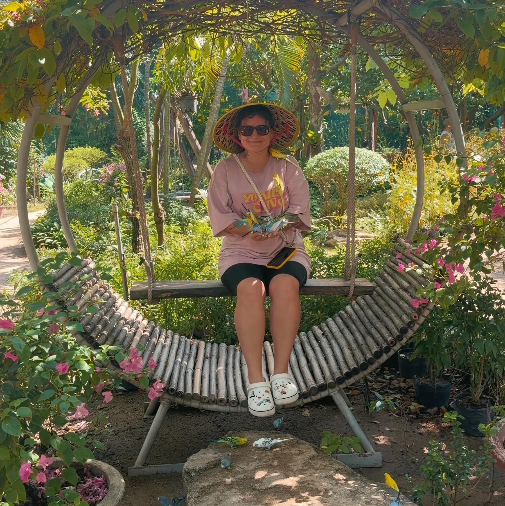
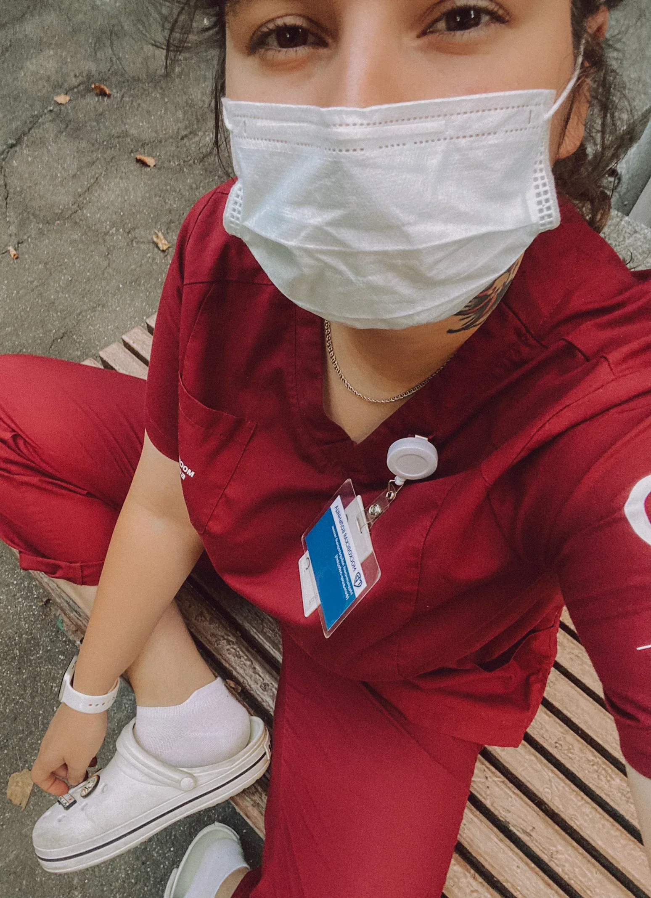
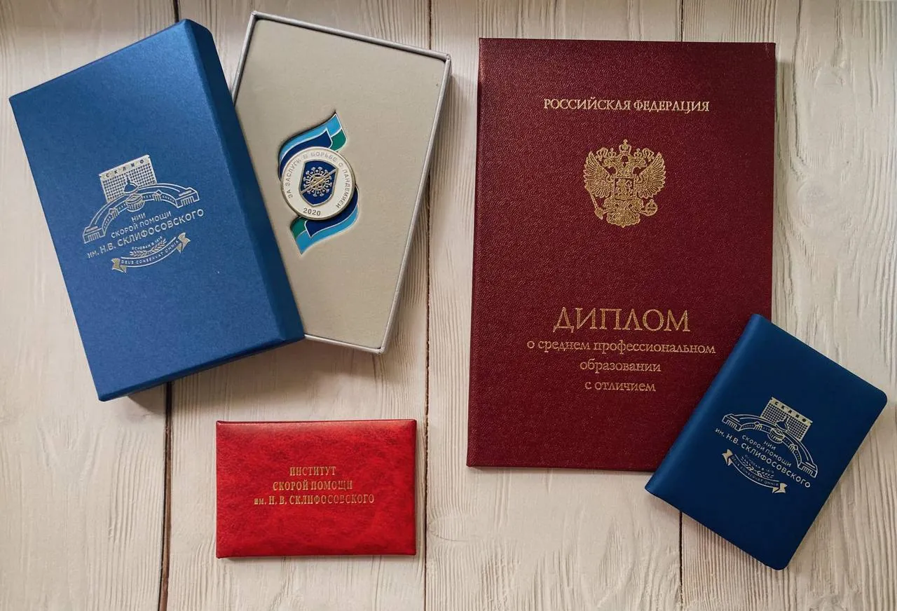
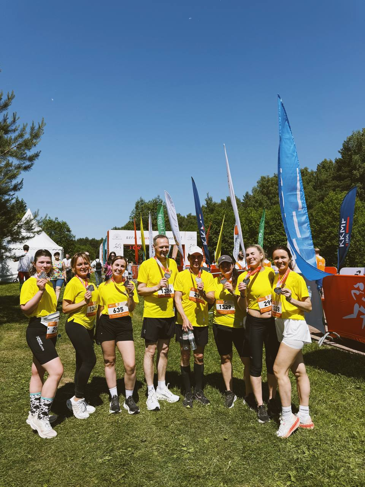
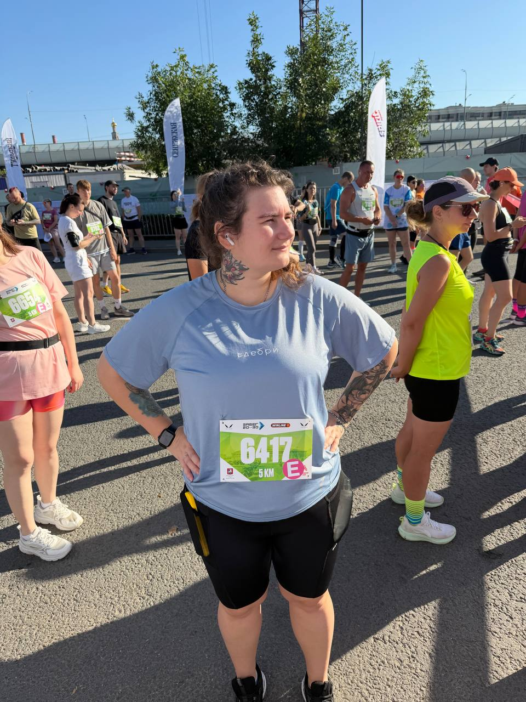
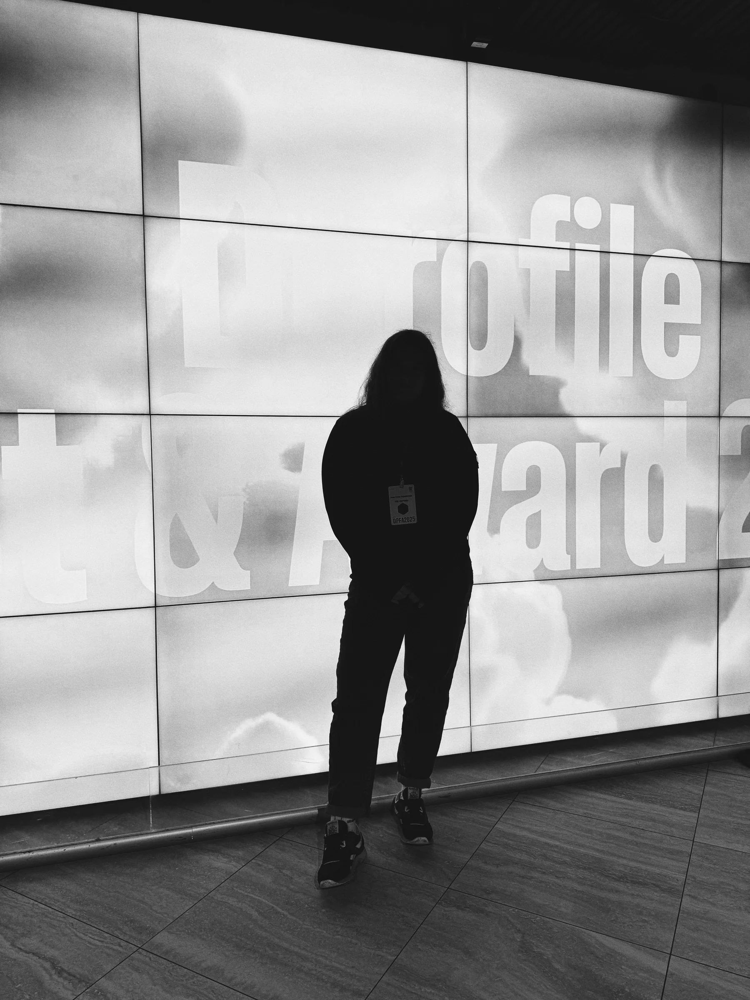
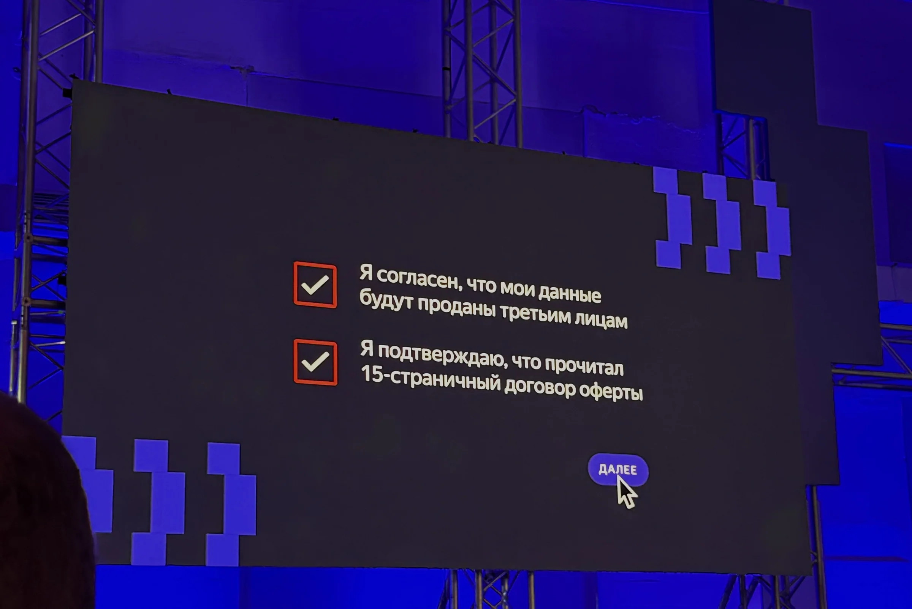
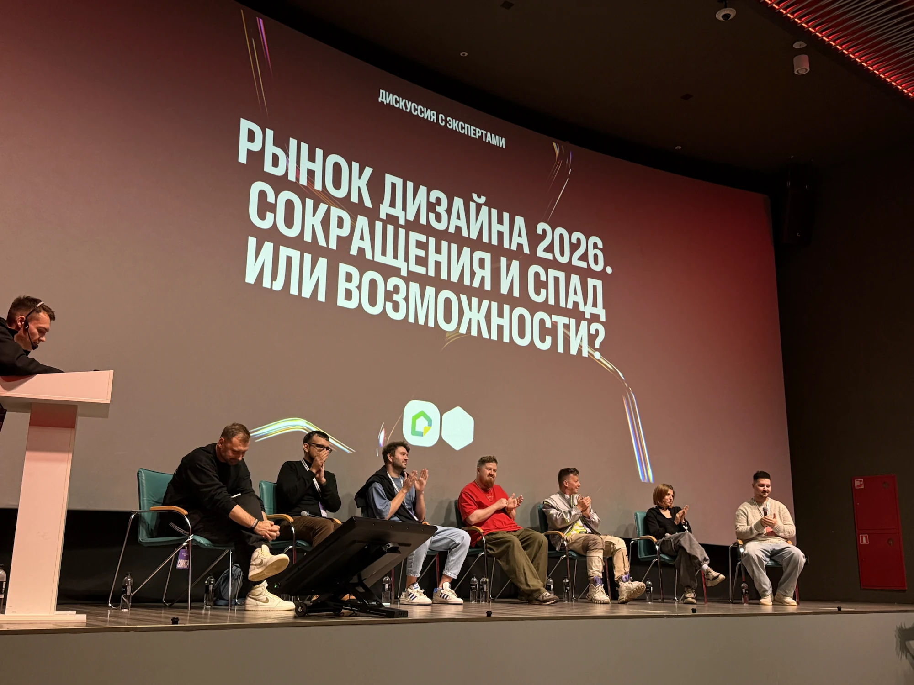
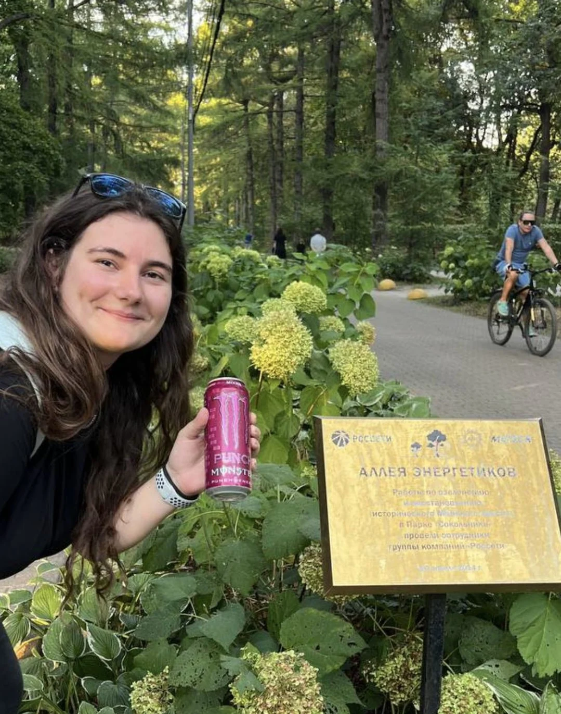

В дизайн я пришла не самым прямым путём. В детстве я училась в художественной школе, много рисовала и всегда была близка к творчеству. Но позже решила пойти в совсем другую сторону - в медицину. Получила медицинское образование и пять с половиной лет проработала в Институте Склифосовского.
Со временем я поняла, что мне очень не хватает творчества, свободы и возможности придумывать новое. Так я вернулась к тому, что всегда любила, - сначала к визуальному, а затем и к продуктовому дизайну. При этом медицинский опыт никуда не исчез: он научил меня ответственности, внимательности и бережному отношению к людям.


Я вообще довольно чувствительный и эмпатичный человек. Часто замечаю настроение, интонации и детали, которые сложно измерить, но легко почувствовать. Мне кажется, это помогает и в работе: лучше понимать пользователей, слышать коллег и не забывать, что за любым интерфейсом всегда находится живой человек.
В обычной жизни я очень люблю котиков, долгие прогулки и кофе. Люблю двигаться: бегаю, занимаюсь йогой и растяжкой. Спорт помогает мне переключаться и разгружать голову, а лучшие идеи часто приходят не за ноутбуком, а где-нибудь во время прогулки.


Ещё я постоянно учусь. Люблю офлайн-мероприятия, лекции, дизайн-фестивали, курсы и книги. Мне интересно узнавать новое не только про дизайн, но и про людей, культуру, технологии и всё, что помогает смотреть на мир чуть шире.



И я точно не тот человек, который приходит на работу только ради задач и созвонов. Мне нравится командная жизнь: участвовать в забегах с коллегами, придумывать активности, организовывать онлайн-корпоративы и готовить небольшие шутки и сюрпризы на свой день рождения.
Наверное, за пределами макетов я примерно такая же, как и внутри них: любопытная, внимательная к людям, немного сентиментальная и всегда готовая что-нибудь придумать.
